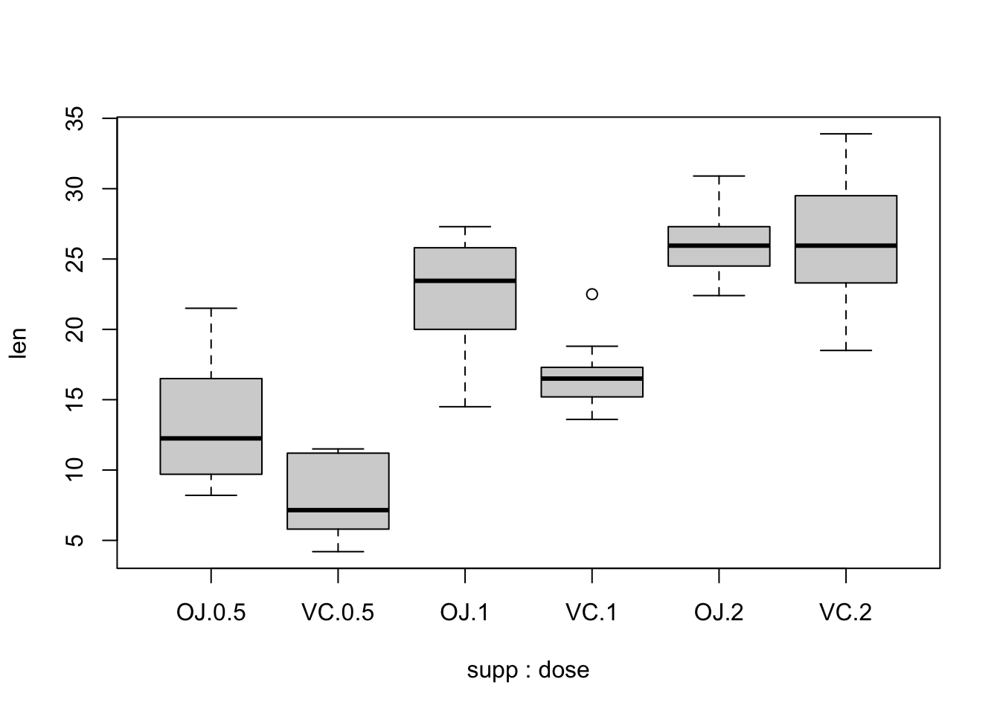
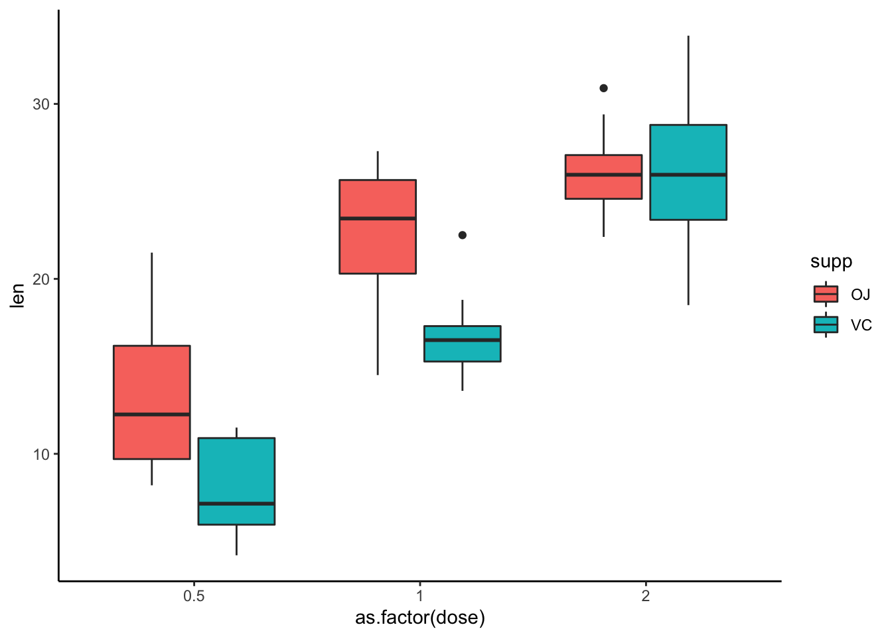

3 More base-ics in R
When I am coding for myself, I am often using the tidyverse and other packages built specifically for the task I am trying to do. But there is some reason to think that jumping directly into teaching the tidyverse to new coders is a bad idea. I learned the principles of base R first, and have found them immensely helpful – so we will spend a bit more time exploring those principles before we jump into the tidyverse.
3.1 Guinea pigs’ tooth growth
R comes with a bunch of built in data sets that are useful to explore when learning R, and also when sharing a question in R with a minimal reproducible example (MRE).
Explore the data sets by typing data() into your R console.
We are going to look at the ToothGrowth data which explores “The Effect of Vitamin C on Tooth Growth in Guinea Pigs”.
# What is the length of the data.frame?
length(ToothGrowth) # This is interpreted as the number of rows
# [1] 3
# What are the dimensions of the data.frame
nrow(ToothGrowth)
# [1] 60
ncol(ToothGrowth)
# [1] 3
dim(ToothGrowth) # Always number of rows then numbers of columns
# [1] 60 3
# This can be useful to glance at
str(ToothGrowth)
# 'data.frame': 60 obs. of 3 variables:
# $ len : num 4.2 11.5 7.3 5.8 6.4 10 11.2 11.2 5.2 7 ...
# $ supp: Factor w/ 2 levels "OJ","VC": 2 2 2 2 2 2 2 2 2 2 ...
# $ dose: num 0.5 0.5 0.5 0.5 0.5 0.5 0.5 0.5 0.5 0.5 ...
# Get some quick summary statistics of each column
summary(ToothGrowth)
# len supp dose
# Min. : 4.20 OJ:30 Min. :0.500
# 1st Qu.:13.07 VC:30 1st Qu.:0.500
# Median :19.25 Median :1.000
# Mean :18.81 Mean :1.167
# 3rd Qu.:25.27 3rd Qu.:2.000
# Max. :33.90 Max. :2.000Notice how the summary is kinda useless for two of the columns
suppanddose. And even thelencolumn summary is of limited use because it doesn’t break it down by group.4
# Quick per group average a group and treatment
mean(subset(ToothGrowth, supp == "VC" & dose == 0.5)$len)
# [1] 7.98There are much better ways to do this sort of thing! They
tidyversehas a whole suite of functions that are built for this sort of activity. We will learn this soon. But it is important to understand that there are ways to get this information withbaseR functions.
boxplot(formula = len ~ supp + dose,
data = ToothGrowth)
With ggplot2, you can create similar visualizations, but we will talk more about this later.
# Loading required package: tidyverse
# ── Attaching packages ─────────────────────────────────────── tidyverse 1.3.1 ──
# ✔ ggplot2 3.3.6 ✔ purrr 0.3.4
# ✔ tibble 3.1.7 ✔ dplyr 1.0.9
# ✔ tidyr 1.2.0 ✔ stringr 1.4.0
# ✔ readr 2.1.2 ✔ forcats 0.5.1
# ── Conflicts ────────────────────────────────────────── tidyverse_conflicts() ──
# ✖ dplyr::filter() masks stats::filter()
# ✖ dplyr::lag() masks stats::lag()
We will come back to the ToothGrowth data as a way to explore some statistics, but for now let’s dive deeper into what functions are.
3.2 Functions
Let’s take a moment to stop and talk about functions.
Functions are the workhorse of R! They can group, average, model, and plot data – and just about anything else. We have already used a bunch of them – mean, summary, length.
The vast majority of functions that you will use have already been created by other programmers and are available in base R or via other packages that can be be downloaded through The Comprehensive R Archive Network (CRAN)4, which maintains R, or other alternative archives like Bioconductor5, which has a bunch of great bioinformatic specific packages.
Occasionally, you will find that you are doing a specific task several times over and are copy-and-pasting code and only changing a few variables at a time. When you find yourself doing this, it is best to stop and build a function – or even better – you should look to see if one already exists. Using functions for repeated tasks will enhance the readability and reproducibility of your code.
For example:
# With base R copy and pasting
mean(subset(ToothGrowth, supp == "VC" & dose == 0.5)$len)
# [1] 7.98
mean(subset(ToothGrowth, supp == "VC" & dose == 1)$len)
# [1] 16.77
mean(subset(ToothGrowth, supp == "VC" & dose == 2)$len)
# [1] 26.14
mean(subset(ToothGrowth, supp == "OJ" & dose == 0.5)$len)
# [1] 13.23
mean(subset(ToothGrowth, supp == "OJ" & dose == 1)$len)
# [1] 22.7
mean(subset(ToothGrowth, supp == "OJ" & dose == 2)$len)
# [1] 26.06
# With the tidyverse
require(tidyverse)
ToothGrowth %>%
group_by(supp, dose) %>%
summarize(len_avg = mean(len))
# `summarise()` has grouped output by 'supp'. You can override using the
# `.groups` argument.
# # A tibble: 6 × 3
# # Groups: supp [2]
# supp dose len_avg
# <fct> <dbl> <dbl>
# 1 OJ 0.5 13.2
# 2 OJ 1 22.7
# 3 OJ 2 26.1
# 4 VC 0.5 7.98
# 5 VC 1 16.8
# 6 VC 2 26.1The
tidyverseobviously makes this task much easier and more flexible. We will talk about thetidyversemore later. But I just introduce it here to emphasize how stopping when you are copy-and-pasting to search for useful functions, is worthwhile!
Now, we are going to take a moment to learn the skill of how to make simple functions. This will help us understand what functions are at a deeper level – so when we are using functions developed for us from other packages, we will understand more fully the proper mechanics, inputs, & outputs etc..
3.2.1 Creating functions
The pseudocode anatomy of creating a function is as follows:
function_name <- function(argument_1, argument_2) {
# Function body w/ some sort of manipulation of arguments or execution of code
result <- argument_1 + argument_2
# Return result
return(result)
}- The function name is assigned on the left of the
<-operator. - The arguments are set within the parenthesis of the
function. - Within the curly brackets
{ }, you define what code to execute during a function call. - The
returnfunction defines what variable is the output.
For example, say you were modeling something in R and you found yourself using the equation (x + y)^x + (1 - y)^x over and over. It would be easy to mistype an operator or variable. Addtionally, if you were copy-and-pasting and wanted to see if the equation (x + y)^(x + 1) + (1 - y)^x better described your data, you would need to go in a change the code line by line. However, if you stop and make yourself a function, you would need to only change one line of code, you would increase readability and reproducibility of the code, and avoid pesky copy-and-paste related mistakes.
You can create the function with the following code:
# Function: fancy_math_eqn -----
# Description: Executes a fancy math equation
# Inputs: x, y -- two numeric variables
# Outputs: single numeric
# Required packages
# None
# Example call
# fancy_math_eqn(x = 2, y = 7)
fancy_math_eqn <- function(x, y) {
(x + y)^x + (1 - y)^x
} ## End function ------ Notice here you can avoid the
returnfunction if you don’t define a variable. - Writing the function name, description, inputs, and outputs as well as any required packages beyond
baseR is important. - You can set a handy outline for this function backbone with [Snippets] – we may talk more about this later.
3.2.1.1 Try it out
# You can have the arguments implied by the order in the function call
fancy_math_eqn(4, 3)
# [1] 2417
# Or you can explicitly name each argument
fancy_math_eqn(x = 4, y = 3)
# [1] 2417
# Which allows you to write it in a different order
fancy_math_eqn(y = 3, x = 4)
# [1] 24173.2.1.3 Hello Challenge
Alter the original hello_world() function, to create a new function hello_world_name() that takes a name as an argument and has the following desired behavior.
hello_world_name(name = "Thomas")
# [1] "Hello world, my name is Thomas!"3.2.1.3.1 Original
# Function: hello_world -----
# Description: Prints "Hello World"
# Inputs: name - character string
# Outputs: Character string "Hello World!"
# Required packages
# None
# Example call
# hello_world()
hello_world <- function() {
# Function body
print("Hello world!")
} ## End function -----Click Hello for solution.
3.3 base R functions.
There are a bunch of functions that come by default with R in the base package.
# List 20 random objects in the base package in R
sample(ls("package:base"), size = 20)
# [1] "duplicated.default" "print.default"
# [3] "readBin" "prmatrix"
# [5] "getNamespaceImports" "options"
# [7] "is.element" "all.equal.formula"
# [9] "restartFormals" "drop"
# [11] "as.character.srcref" "as.matrix.POSIXlt"
# [13] "as.data.frame.difftime" "attributes"
# [15] "tempdir" "transform.default"
# [17] "quarters" "namespaceImportFrom"
# [19] "print.NativeRoutineList" "as.character.factor"
# How many are there?
length(ls("package:base"))
# [1] 1257
length(ls("package:stats"))
# [1] 452These include some of the useful functions that we have looked at so far, class(), length(), summary(), as well as a bunch of others.
These are super useful functions with which to get acquainted – because it is important to fully understand the fundamental properties of your data before you go on to do any statiscs or data visualization.
- How many observations are there in each group?
- Which are the dependent variables and which are the independent variables?
- What does the distribution of the data look like for the dependent variables?
- Are there any observations with missing values (i.e.
NAs)?
When you are collecting your own data, it is likely that you already have a good answer for these questions. You likely already know your sample sizes, your variables, and if any missing values are present. But it is good practice to confirm that your loaded data match your expectations. And it is obviously necessary if you are exploring someone else’s data set.
3.3.1 Freeform Data Challenge
Use the data() function in the console to explore the pre-loaded R data sets. Look at the data. Try to extract some useful information. Number of observations in each group. Average values for the dependent variables. Distribution of the data. Use some of the skills we have learned so far to do this. And feel free to Google and add a few skills to your toolbox along the way.
Freeform Solution Example
3.3.2 Loops & if else
The tidyverse has gotten rid of some of the need for loops and if else logic. But it is still useful to understand the mechanics of both of these.
3.3.2.1 for loops
Loops in R can be a useful skill to understand. There are functions that are faster than loops, but understanding the mechanics of a loop is useful.
The general pseudostructure of a loop is as follows:
# Set up the vector the variable will loop though
for (var in vector) {
# Utilize the variable on that iteration of the loop
print(var)
}for (i in 1:10) {
print(paste("loop #", i))
}
# [1] "loop # 1"
# [1] "loop # 2"
# [1] "loop # 3"
# [1] "loop # 4"
# [1] "loop # 5"
# [1] "loop # 6"
# [1] "loop # 7"
# [1] "loop # 8"
# [1] "loop # 9"
# [1] "loop # 10"Predict the output of this for loop.
vector <- c("hello", "this", "is", "a", "character", "vector")
for (i in 1:length(vector)) {
print(paste("loop #", i))
}3.3.2.1.1 Loop Challenge
How can you change this loop to make the character strings in the vector print out like below:
# [1] "loop # 1"
# [1] " hello"
# [1] "loop # 2"
# [1] " hello this"
# [1] "loop # 3"
# [1] " hello this is"
# [1] "loop # 4"
# [1] " hello this is a"
# [1] "loop # 5"
# [1] " hello this is a character"
# [1] "loop # 6"
# [1] " hello this is a character vector"Click for Loop Challenge Solution
3.3.2.2 if ... else
It is important to know that you can program so that your code does something specific under one set of conditions and something else under another set of conditions.
One way to do that is to use if ... else statements
# Set random value
set.seed(4)
x <- rnorm(1)
x
# [1] 0.2167549
# Print if positive number
if (x > 0) {
print("Positive number")
}
# [1] "Positive number"You can make more complicated statements with the addition of else if
# Set random value
set.seed(1)
x <- rnorm(1)
x
# [1] -0.6264538
# Print if positive number
if (x > 0) {
print("Positive number")
} else {
print("Negative number")
}
# [1] "Negative number"But wait what if x equals exactly zero – relatively unlikely with a rnorm to get exactly 0 but it is not impossible and in this case you would misidentify zero as a negative number – you can add another if statement to capture that possibility.
# Set random value
x <- 0
x
# [1] 0
# Print if positive number
if (x > 0) {
print("Positive number")
} else if (x == 0) {
print("Zero")
} else {
print("Negative number")
}
# [1] "Zero"